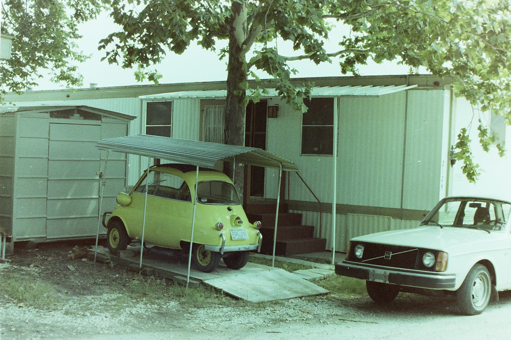
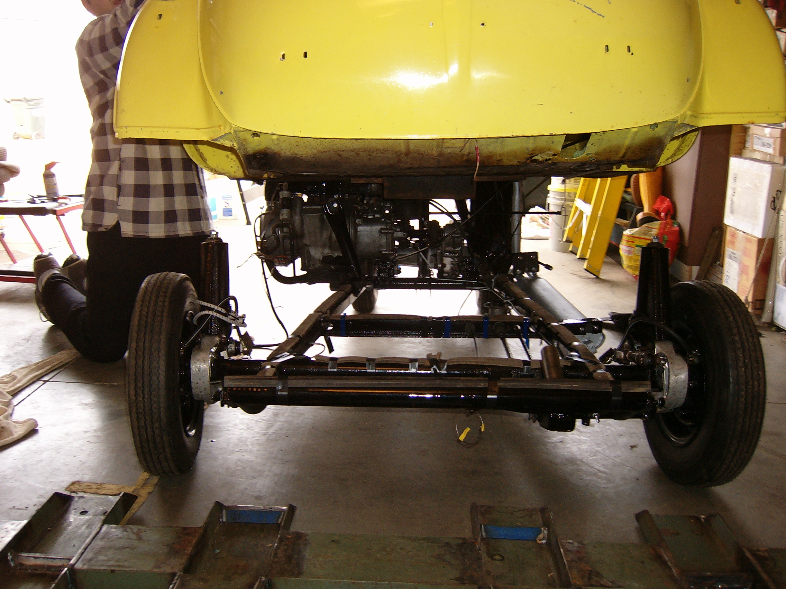

John’s Isetta Story
Purchase
John Jueckstock found the Isetta in 1964 in his hometown of Fenton, Michigan.
He was a 17 year old high school junior.
The Isetta had been given away by a car dealership as a promotional bonus to buyers of large luxury cars.
Its first owner had driven it as a plaything until the brakes had given out, and now he was looking to unload it.
John somehow managed to scrape together $100 and bought the Isetta, probably never thinking that he would still be driving his first car over half a century later.
Driving the Isetta without working brakes was nerve-wracking but just barely possible.
To stop, John would downshift aggressively to engine-brake, tug on the emergency brake (which still worked, a little) to get it down to a slow roll, and finally slip the transmission into reverse and gingerly pop the clutch to bring the car to a lurching halt at the last second.
(Unsurprisingly, the transmission has been through multiple overhauls since.)
“The Car’s on Fire!”
The night after John purchased the Isetta, he set off “cruising” to show it off to his two best friends.
They were duly impressed and set off with John to cruise the neighborhood like the cool kids.
Sometime during the “cruising”, one of the curious boys locked the only door.
None of them were aware, at that moment, of a peculiar design quirk of the BMW Isetta and its unfortunate implications for their evening cruise.
An Isetta’s battery is located under the bench seat.
It is supposed to have an insulating cover protecting the battery terminals from the wire bracing and coil springs of the seat above.
Alas, John’s new Isetta did not, in fact, possess such a cover.
With the weight of three rambunctious high school boys bouncing on the seat, its wire bracing soon created a short between the battery’s terminals, resulting in incandescent seat springs and smoldering seat stuffing as the seat gradually caught fire.
While they waited at a stop light, the boys were suddenly enveloped in acrid white smoke.
Panic ensued.
While John’s friends thrashed around to get out of the car, John couldn’t reach past them to unlock the door, compounding the panic.
When the door was finally unlocked and the car’s occupants released, one of John’s friends danced around the car shrieking “the car’s on fire, the car’s on fire!” at the top of his lungs to all passers-by.
Meanwhile, John was able to pull the seat out of the car and stop the fire before it did any permanent damage, but this wasn’t the last time the seat would catch fire.
The next seat fire disrupted an otherwise promising date and resulted in an evening spent sitting on an Isetta bench seat extracted from the car and placed against a tree trunk while the smoking Isetta cooled down enough to drive home.
For the record, John’s Isetta now features a very effective battery cover, and spontaneous seat fires are a thing of the past.
Highschool Hijinks
Q: How many highschool football players can you fit into an Isetta for a run to the local “Dog ’n’ Suds” drivethrough?
A: Five (5); John behind the wheel, two buddies squeezed into the bench seat beside him, and two more buddies sitting on their laps (with their heads out the open sun roof).
Q: How many highschool football players does it take to carry an Isetta up the front steps of the Fenton public high school?
A: Unknown, but the car was found there on at least one occasion, nonetheless.
Out in the Cold
After high school, John attended Appalachian Bible College, where he met and married a girl named Judy.
John left the Isetta in the care of a friend in West Virginia while he and his new bride moved to Minnesota for John’s continuing education.
Unfortunately, sometime later, the “friend” ran out of room in his garage and relocated the Isetta to . . . the woods on a hillside behind his house. (He did throw a tarp over it, so it had that going for it.)
By the time John had finished his BA (Bethel College) and MM (University of Northern Colorado), and returned to claim the Isetta, it was in pretty sorry shape!
The First Rebuild
With his “poor student” days behind him and his “less poor college music teacher” days begun in Birmingham, Alabama, John set about restoring the Isetta to working order in the late 1970s.
In the above photo you can see John (right) and a friend (left) working on the Isetta’s body, which has been hoisted off of the chassis (not pictured).
You can also see the original “Feather White” factory color scheme.
The world of Isetta fans was tiny and obscure back the in the pre-Web days of the 1970s, but somehow John found an Isetta owners’ club and through them a specialist in California who rebuilt Isetta engines.

John shipped the partially disassembled Isetta engine off to California and was relieved to receive a return shipment containing the fully rebuilt and reassembled engine, which ran without issue when remounted in the car.
The Isetta was running again!
Daily Driver
The next stop in John and Judy’s nomadic life was Ft. Worth, Texas, where John embarked on a five year DMA (Doctor of Musical Arts) degree program at Southwestern Baptist Theological Seminary.
Judy worked full time to put hubby through, and John worked whatever jobs or side gigs he could find during the summers.
He often used the Isetta as a daily driver for his summer gigs, even if it meant braving the traffic on the infamous “Mix Master” in downtown Dallas/Ft. Worth.
It was at this point that John painted the heretofore white Isetta the brightest yellow he could find.
Every little bit of visibility helps when you are looking out the window at the hubcaps of big rigs that could just as easily drive over you as around you!

In the above picture from John and Judy’s Texas days, you can spot both the Isetta nestled in is custom-made carport and the 1975 Volvo 244 that John’s son Jordan still drives to work (and uses to tow the Isetta to events) today!
On at least a few occasions, John used the Isetta to transport his equipment to house painting gigs.
His ladders had to protrude out the sun roof, but that just helped make the Isetta more visible, anyway.
Back Into Storage
Time stops for no microcar, and the Isetta faced another time in storage after John and Judy felt the call of God to the mission field in Italy starting in 1988.
As they prepared to leave the US in 1991, they stored the Isetta (and the Volvo, and other household goods they expected to return for eventually) in a garage built on the property of John’s big brother George.
In the above photo, five-year-old Jordan Jueckstock plays in the Isetta as it is positioned in long-term storage before the move to Italy in 1991.
George relocated in 1997, necessitating a trip back to the states to move all the stored goods to a new garage at George’s new place.
Finally, after John and Judy returned to the States for good in 2005, the Isetta was brought out of storage in 2008.
Extensive work was required to get the Isetta running again, and it was starting to require significant cosmetic work, too.
John’s son Jordan, now a senior at Bob Jones University, got to help some this time.

Wedding Bells
When time came for Jordan to wed the lovely Jessica in 2010, the Isetta was called on to perform wedding getaway duty!


Alas, time had not been kind to the ancient 300cc engine, and the lifters seized up weeks before the wedding, incapacitating the Isetta.
Nothing but a serious overhaul would restore that stuttering bantam roar to life, and the prospects of a romantic getaway in a garish yellow motorized egg faded.

John’s creativity would not, however, be stymied.
With help from his friends and cooworkers at BJU Press Digital’s prop department, John arranged for a magnetic “band-aid” to adorn the engine hatch of the silenced Isetta.

The groomsmen and ushers provided the horsepower, and the couple was pushed away into wedded bliss.
(The immediate availability of another, actually working, automobile to handle subsequent honeymoon travel significantly helped maintain said bliss.)
Crowd Pleaser
But band-aid solutions are not forever.
The Isetta’s engine was overhauled once more and the whole vehicle restored to pristine operating condition.
In 2011, John took the Isetta to the vintage car show held at the BMW Zentrum Museum in Greer, SC.
The plucky little microcar may have looked a little out of place next to rare classics and vintage supercars, but someone forgot to tell the spectators, who flocked to gawk at its diminuative absurdity.
It even brought home first prize in the “Crowd Pleaser” category!